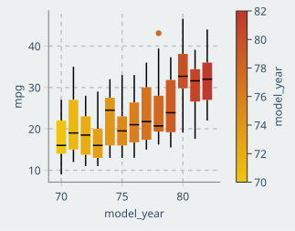

using CSV,DataFrames,Tidier
using CairoMakie,AlgebraOfGraphics,MakieThemes
using StatsBase
using ScientificTypes
Makie.set_theme!(ggthemr(:flat));🚗🚕🚙 auto-mpg dataset
1. load csv
df=CSV.File("../data/auto-mpg.csv")|>DataFrame
df=@chain df begin
@clean_names
end
first(df,5)5×7 DataFrame
| Row | mpg | cylinders | displacement | horsepower | weight | acceleration | model_year |
|---|---|---|---|---|---|---|---|
| Float64 | Int64 | Float64 | Int64? | Int64 | Float64 | Int64 | |
| 1 | 18.0 | 8 | 307.0 | 130 | 3504 | 12.0 | 70 |
| 2 | 15.0 | 8 | 350.0 | 165 | 3693 | 11.5 | 70 |
| 3 | 18.0 | 8 | 318.0 | 150 | 3436 | 11.0 | 70 |
| 4 | 16.0 | 8 | 304.0 | 150 | 3433 | 12.0 | 70 |
| 5 | 17.0 | 8 | 302.0 | 140 | 3449 | 10.5 | 70 |
2. describe data
dropmissing!(df)
@show describe(df);describe(df) = 7×7 DataFrame
Row │ variable mean min median max nmissing eltype
│ Symbol Float64 Real Float64 Real Int64 DataType
─────┼───────────────────────────────────────────────────────────────────────
1 │ mpg 23.5172 9.0 23.0 46.6 0 Float64
2 │ cylinders 5.45707 3 4.0 8 0 Int64
3 │ displacement 193.65 68.0 148.5 455.0 0 Float64
4 │ horsepower 104.189 46 92.0 230 0 Int64
5 │ weight 2973.0 1613 2803.5 5140 0 Int64
6 │ acceleration 15.5558 8.0 15.5 24.8 0 Float64
7 │ model_year 76.0278 70 76.0 82 0 Int643. EDA
3.1 heatmap of variables
df_cor = df|>Matrix|>cor.|> d -> round(d, digits=2)
labels=names(df)
function plot_cov_cor()
fig = Figure(resolution=(800, 400))
ax1 = Axis(fig[1, 1]; xticks=(1:7, labels), yticks=(1:7, labels), title="corr of mpg variables",
xticklabelrotation = pi/8,
yreversed=true)
hm = heatmap!(ax1, df_cor)
Colorbar(fig[1, 2], hm)
[text!(ax1, x, y; text=string(df_cor[x, y]), color=:white, fontsize=18, align=(:center, :center)) for x in 1:7, y in 1:7]
fig
end
plot_cov_cor()3.2 Univariate Analysis
3.2.1 cylinders data
plot_univariate plot univariate count
function plot_univariate(df::AbstractDataFrame,feature1::Symbol,feature2::Symbol,cats::Symbol)
ax=(width = 225, height = 225)
data_layer=data(df)
mappinglayer=mapping(feature1,feature2,color=cats)
vislayer=visual(BarPlot,bar_labels=:y,flip_labels_at=130)
plt=data_layer*mappinglayer*vislayer
draw(plt,axis=ax)
endplot_univariate (generic function with 1 method)df321=@chain df begin
@group_by(cylinders)
@summarize(count=n())
@ungroup
end
plot_univariate(df321,:cylinders,:count,:cylinders)3.2.2 model_year count
df322=@chain df begin
@group_by(model_year)
@summarize(count=n())
@ungroup
end
plot_univariate(df322,:model_year,:count,:model_year)3.2.3 density of horsepower
ax=(width = 400, height = 300)
datalayer323=data(df)
mappinglayer323=mapping(:horsepower)
vislayer3231=visual(AlgebraOfGraphics.Density,color=(:lightgreen,0.6),strokewidth=1,strokecolor=:black)
vislayer3232=visual(AlgebraOfGraphics.Hist,strokewidth=1,strokecolor=:black,normalization = :pdf,color=(:red,0.5))
draw(datalayer323*mappinglayer323*(vislayer3231+vislayer3232),axis=ax)3.3 multivariate analysis
3.3.1 mpg by cylinders
let
ax=(width =250, height = 250)
datalayer=data(df)
mappinglayer=mapping(:cylinders,:mpg,color=:cylinders)
vislayer=visual(BoxPlot)
data(df) * visual(BoxPlot) *
mapping(:cylinders, :mpg, color=:cylinders) |>d->draw(d,axis=ax)
end3.3.2 mpg by model_year
let
ax=(width =250, height = 250)
data(df) * visual(BoxPlot) *
mapping(:model_year, :mpg, color=:model_year) |>d->draw(d,axis=ax)
end
3.3.3 horsepower-mpg relatiion
ax=(width =250, height = 250)
plt1 = data(df)*mapping(:horsepower,:mpg) * linear()
#plt2 = data(df)*mapping(:horsepower,:mpg)
draw(plt1, axis=ax)